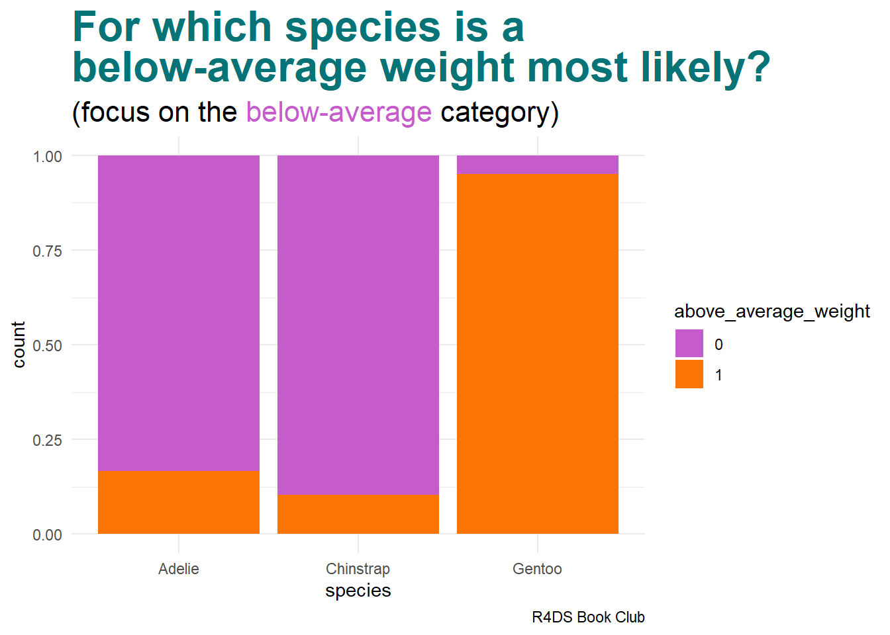
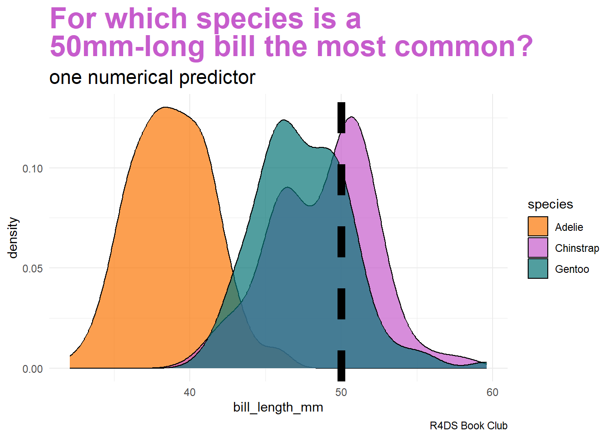
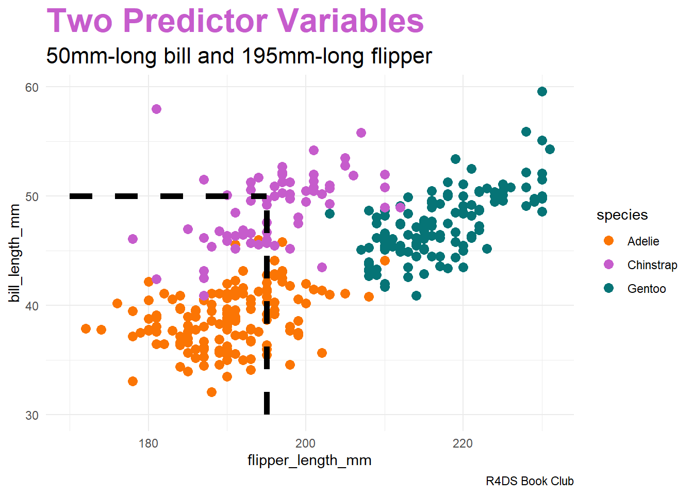

Naive Bayes Classification
Learning objectives:
- explore the pros and cons of naive Bayes classification
- generalize classification tasks for more than two categories
library("bayesrules")
library("dplyr")
library("e1071")
library("ggplot2")
library("ggtext")
library("janitor")
library("tidyr")
sessionInfo()R version 4.3.0 (2023-04-21 ucrt)
Platform: x86_64-w64-mingw32/x64 (64-bit)
Running under: Windows 10 x64 (build 19045)
Matrix products: default
locale:
[1] LC_COLLATE=English_United States.utf8
[2] LC_CTYPE=English_United States.utf8
[3] LC_MONETARY=English_United States.utf8
[4] LC_NUMERIC=C
[5] LC_TIME=English_United States.utf8
time zone: America/Los_Angeles
tzcode source: internal
attached base packages:
[1] stats graphics grDevices utils datasets methods base
other attached packages:
[1] tidyr_1.3.0 janitor_2.2.0 ggtext_0.1.2 ggplot2_3.4.2
[5] e1071_1.7-13 dplyr_1.1.2 bayesrules_0.0.2
loaded via a namespace (and not attached):
[1] gridExtra_2.3 inline_0.3.19 rlang_1.1.1
[4] magrittr_2.0.3 snakecase_0.11.0 matrixStats_1.0.0
[7] compiler_4.3.0 loo_2.6.0 callr_3.7.3
[10] vctrs_0.6.2 reshape2_1.4.4 stringr_1.5.0
[13] pkgconfig_2.0.3 crayon_1.5.2 fastmap_1.1.1
[16] ellipsis_0.3.2 utf8_1.2.3 threejs_0.3.3
[19] promises_1.2.0.1 rmarkdown_2.22 markdown_1.7
[22] ps_1.7.5 nloptr_2.0.3 purrr_1.0.1
[25] xfun_0.39 jsonlite_1.8.4 later_1.3.1
[28] parallel_4.3.0 prettyunits_1.1.1 R6_2.5.1
[31] dygraphs_1.1.1.6 stringi_1.7.12 StanHeaders_2.26.26
[34] boot_1.3-28.1 lubridate_1.9.2 Rcpp_1.0.10
[37] rstan_2.21.8 knitr_1.43 zoo_1.8-12
[40] base64enc_0.1-3 bayesplot_1.10.0 httpuv_1.6.11
[43] Matrix_1.5-4 splines_4.3.0 igraph_1.4.3
[46] timechange_0.2.0 tidyselect_1.2.0 rstudioapi_0.14
[49] codetools_0.2-19 miniUI_0.1.1.1 processx_3.8.1
[52] pkgbuild_1.4.0 lattice_0.21-8 tibble_3.2.1
[55] plyr_1.8.8 shiny_1.7.4 withr_2.5.0
[58] groupdata2_2.0.2 evaluate_0.21 survival_3.5-5
[61] proxy_0.4-27 RcppParallel_5.1.7 xts_0.13.1
[64] xml2_1.3.4 pillar_1.9.0 DT_0.28
[67] stats4_4.3.0 shinyjs_2.1.0 generics_0.1.3
[70] rstantools_2.3.1 munsell_0.5.0 scales_1.2.1
[73] minqa_1.2.5 gtools_3.9.4 xtable_1.8-4
[76] class_7.3-21 glue_1.6.2 tools_4.3.0
[79] shinystan_2.6.0 lme4_1.1-33 colourpicker_1.2.0
[82] grid_4.3.0 crosstalk_1.2.0 colorspace_2.1-0
[85] nlme_3.1-162 cli_3.6.1 fansi_1.0.4
[88] gtable_0.3.3 digest_0.6.31 htmlwidgets_1.6.2
[91] htmltools_0.5.5 lifecycle_1.0.3 mime_0.12
[94] rstanarm_2.21.4 gridtext_0.1.5 shinythemes_1.2.0
[97] MASS_7.3-58.4 Data: Palmer Penguins
There exist multiple penguin species throughout Antarctica, including the Adelie, Chinstrap, and Gentoo. When encountering one of these penguins on an Antarctic trip, we might classify its species
\[Y = \begin{cases} A & \text{Adelie} \\ C & \text{Chinstrap} \\ G & \text{Gentoo} \end{cases}\]

\(X_{1}\) categorical variable: whether the penguin weighs more than the average 4200 grams
\[X_{1} = \begin{cases} 1 & \text{above-average weight} \\ 0 & \text{below-average weight} \end{cases}\]

numerical variables:
\[\begin{array}{rcl} X_{2} & = & \text{bill length (mm)} \\ X_{3} & = & \text{flipper length (mm)} \\ \end{array}\]
data(penguins_bayes)
penguins <- penguins_bayes
adelie_color = "#fb7504"
chinstrap_color = "#c65ccc"
gentoo_color = "#067476"
penguins %>%
tabyl(species) species n percent
Adelie 152 0.4418605
Chinstrap 68 0.1976744
Gentoo 124 0.3604651Naive Bayes Classification
Here, we have three categories, whereas logistic regression is limited to classifying binary response variables. As an alternative, naive Bayes classification
- can classify categorical response variables \(Y\) with two or more categories
- doesn’t require much theory beyond Bayes’ Rule
- it’s computationally efficient, i.e., doesn’t require MCMC simulation
But why is it called “naive”?
One Categorical Predictor
Suppose an Antarctic researcher comes across a penguin that weighs less than 4200g with a 195mm-long flipper and 50mm-long bill. Our goal is to help this researcher identify the species of this penguin: Adelie, Chinstrap, or Gentoo

image code
penguins |>
drop_na(above_average_weight) |>
ggplot(aes(fill = above_average_weight, x = species)) +
geom_bar(position = "fill") +
labs(title = "<span style = 'color:#067476'>For which species is a<br>below-average weight most likely?</span>",
subtitle = "(focus on the <span style = 'color:#c65ccc'>below-average</span> category)",
caption = "R4DS Book Club") +
scale_fill_manual(values = c("#c65ccc", "#fb7504")) +
theme_minimal() +
theme(plot.title = element_markdown(face = "bold", size = 24),
plot.subtitle = element_markdown(size = 16))Recall: Bayes Rule
\[f(y|x_{1}) = \frac{\text{prior}\cdot\text{likelihood}}{\text{normalizing constant}} = \frac{f(y) \cdot L(y|x_{1})}{f(x_{1})}\] where, by the Law of Total Probability,
\[\begin{array}{rcl} f(x_{1} & = & \displaystyle\sum_{\text{all } y'} f(y')L(y'|x_{1}) \\ ~ & = & f(y' = A)L(y' = A|x_{1}) + f(y' = C)L(y' = C|x_{1}) + f(y' = G)L(y' = G|x_{1}) \\ \end{array}\]
over our three penguin species.
Calculation
penguins %>%
select(species, above_average_weight) %>%
na.omit() %>%
tabyl(species, above_average_weight) %>%
adorn_totals(c("row", "col")) species 0 1 Total
Adelie 126 25 151
Chinstrap 61 7 68
Gentoo 6 117 123
Total 193 149 342Prior probabilities:
\[f(y = A) = \frac{151}{342}, \quad f(y = C) = \frac{68}{342}, \quad f(y = G) = \frac{123}{342}\]
Likelihoods:
\[\begin{array}{rcccl} L(y = A | x_{1} = 0) & = & \frac{126}{151} & \approx & 0.8344 \\ L(y = C | x_{1} = 0) & = & \frac{61}{68} & \approx & 0.8971 \\ L(y = G | x_{1} = 0) & = & \frac{6}{123} & \approx & 0.0488 \\ \end{array}\]
Total probability:
\[f(x_{1} = 0) = \frac{151}{342}\cdot\frac{126}{151} + \frac{68}{342}\cdot\frac{61}{68} + \frac{123}{342}\cdot\frac{6}{123} = \frac{193}{342}\]
Bayes’ Rules:
\[\begin{array}{rcccccl} f(y = A | x_{1} = 0) & = & \frac{f(y = A) \cdot L(y = A | x_{1} = 0)}{f(x_{1} = 0)} = \frac{\frac{151}{342}\cdot\frac{126}{151}}{\frac{193}{342}} & \approx & 0.6528 \\ f(y = C | x_{1} = 0) & = & \frac{f(y = A) \cdot L(y = C | x_{1} = 0)}{f(x_{1} = 0)} = \frac{\frac{68}{342}\cdot\frac{61}{68}}{\frac{193}{342}} & \approx & 0.3161 \\ f(y = G | x_{1} = 0) & = & \frac{f(y = A) \cdot L(y = G | x_{1} = 0)}{f(x_{1} = 0)} = \frac{\frac{123}{342}\cdot\frac{6}{123}}{\frac{193}{342}} & \approx & 0.0311 \\ \end{array}\]
The posterior probability that this penguin is an Adelie is more than double that of the other two species
One Numerical Predictor
Let’s ignore the penguin’s weight for now and classify its species using only the fact that it has a 50mm-long bill

image code
penguins|>
ggplot(aes(x = bill_length_mm, fill = species)) +
geom_density(alpha = 0.7) +
geom_vline(xintercept = 50, linetype = "dashed", linewidth = 3) +
labs(title = "<span style = 'color:#c65ccc'>For which species is a<br>50mm-long bill the most common?</span>",
subtitle = "one numerical predictor",
caption = "R4DS Book Club") +
scale_fill_manual(values = c(adelie_color, chinstrap_color, gentoo_color)) +
theme_minimal() +
theme(plot.title = element_markdown(face = "bold", size = 24),
plot.subtitle = element_markdown(size = 16))Our data points to our penguin being a Chinstrap
- we must weigh this data against the fact that Chinstraps are the rarest of these three species
- difficult to compute likelihood \(L(y = A | x_{2} = 50)\)
This is where one “naive” part of naive Bayes classification comes into play. The naive Bayes method typically assumes that any quantitative predictor, here \(X_{2}\), is continuous and conditionally normal:
\[\begin{array}{rcl} X_{2} | (Y = A) & \sim & N(\mu_{A}, \sigma_{A}^{2}) \\ X_{2} | (Y = C) & \sim & N(\mu_{C}, \sigma_{C}^{2}) \\ X_{2} | (Y = G) & \sim & N(\mu_{G}, \sigma_{G}^{2}) \\ \end{array}\]
Prior Probability Distributions
# Calculate sample mean and sd for each Y group
penguins %>%
group_by(species) %>%
summarize(mean = mean(bill_length_mm, na.rm = TRUE),
sd = sd(bill_length_mm, na.rm = TRUE))# A tibble: 3 × 3
species mean sd
<fct> <dbl> <dbl>
1 Adelie 38.8 2.66
2 Chinstrap 48.8 3.34
3 Gentoo 47.5 3.08penguins |>
ggplot(aes(x = bill_length_mm, color = species)) +
stat_function(fun = dnorm, args = list(mean = 38.8, sd = 2.66),
aes(color = "Adelie"), linewidth = 3) +
stat_function(fun = dnorm, args = list(mean = 48.8, sd = 3.34),
aes(color = "Chinstrap"), linewidth = 3) +
stat_function(fun = dnorm, args = list(mean = 47.5, sd = 3.08),
aes(color = "Gentoo"), linewidth = 3) +
...
image code
penguins |>
ggplot(aes(x = bill_length_mm, color = species)) +
stat_function(fun = dnorm, args = list(mean = 38.8, sd = 2.66),
aes(color = "Adelie"), linewidth = 3) +
stat_function(fun = dnorm, args = list(mean = 48.8, sd = 3.34),
aes(color = "Chinstrap"), linewidth = 3) +
stat_function(fun = dnorm, args = list(mean = 47.5, sd = 3.08),
aes(color = "Gentoo"), linewidth = 3) +
geom_vline(xintercept = 50, linetype = "dashed") +
labs(title = "<span style = 'color:#c65ccc'>Prior Probabilities</span>",
subtitle = "conditionally normal",
caption = "R4DS Book Club") +
scale_color_manual(values = c(adelie_color, chinstrap_color, gentoo_color)) +
theme_minimal() +
theme(plot.title = element_markdown(face = "bold", size = 24),
plot.subtitle = element_markdown(size = 16))Computing the likelihoods in R:
# L(y = A | x_2 = 50) = 2.12e-05
dnorm(50, mean = 38.8, sd = 2.66)
# L(y = C | x_2 = 50) = 0.112
dnorm(50, mean = 48.8, sd = 3.34)
# L(y = G | x_2 = 50) = 0.09317
dnorm(50, mean = 47.5, sd = 3.08)Total probability:
\[f(x_{2} = 50) = \frac{151}{342} \cdot 0.0000212 + \frac{68}{342} \cdot 0.112 + \frac{123}{342} \cdot 0.09317 \approx 0.05579\]
Bayes’ Rules:
\[\begin{array}{rcccccl} f(y = A | x_{2} = 50) & = & \frac{f(y = A) \cdot L(y = A | x_{1} = 0)}{f(x_{1} = 0)} = \frac{\frac{151}{342} \cdot 0.0000212}{0.05579} & \approx & 0.0002 \\ f(y = C | x_{2} = 50) & = & \frac{f(y = A) \cdot L(y = C | x_{1} = 0)}{f(x_{1} = 0)} = \frac{\frac{68}{342} \cdot 0.112}{0.05579} & \approx & 0.3992 \\ f(y = G | x_{2} = 50) & = & \frac{f(y = A) \cdot L(y = G | x_{1} = 0)}{f(x_{1} = 0)} = \frac{\frac{123}{342} \cdot 0.09317}{0.05579} & \approx & 0.6006 \\ \end{array}\]
Though a 50mm-long bill is relatively less common among Gentoo than among Chinstrap, it follows that our naive Bayes classification, based on our prior information and penguin’s bill length alone, is that this penguin is a Gentoo – it has the highest posterior probability.
We’ve now made two naive Bayes classifications of our penguin’s species, one based solely on the fact that our penguin has below-average weight and the other based solely on its 50mm-long bill (in addition to our prior information). And these classifications disagree: we classified the penguin as Adelie in the former analysis and Gentoo in the latter. This discrepancy indicates that there’s room for improvement in our naive Bayes classification method.
Two Predictor Variables

image code
penguins |>
ggplot(aes(x = flipper_length_mm, y = bill_length_mm,
color = species)) +
geom_point(size = 3) +
geom_segment(aes(x = 195, y = 30, xend = 195, yend = 50),
color = "black", linetype = 2, linewidth = 2) +
geom_segment(aes(x = 170, y = 50, xend = 195, yend = 50),
color = "black", linetype = 2, linewidth = 2) +
labs(title = "<span style = 'color:#c65ccc'>Two Predictor Variables</span>",
subtitle = "50mm-long bill and 195mm-long flipper",
caption = "R4DS Book Club") +
scale_color_manual(values = c(adelie_color, chinstrap_color, gentoo_color)) +
theme_minimal() +
theme(plot.title = element_markdown(face = "bold", size = 24),
plot.subtitle = element_markdown(size = 16))Generalizing Bayes’ Rule:
\[f(y | x_{2}, x_{3}) = \frac{f(y) \cdot L(y | x_{2}, x_{3})}{\sum_{y'} f(y') \cdot L(y' | x_{2}, x_{3})}\]
Another “naive” assumption of conditionally independent:
\[L(y | x_{2}, x_{3}) = f(x_{2}, x_{3} | y) = f(x_{2} | y) \cdot f(x_{3} | y)\]
- mathematically efficient
- but what about correlation?
# sample statistics of x_3: flipper length
penguins %>%
group_by(species) %>%
summarize(mean = mean(flipper_length_mm, na.rm = TRUE),
sd = sd(flipper_length_mm, na.rm = TRUE))# A tibble: 3 × 3
species mean sd
<fct> <dbl> <dbl>
1 Adelie 190. 6.54
2 Chinstrap 196. 7.13
3 Gentoo 217. 6.48Likelihoods of a flipper length of 195 mm:
# L(y = A | x_3 = 195) = 0.04554
dnorm(195, mean = 190, sd = 6.54)
# L(y = C | x_3 = 195) = 0.05541
dnorm(195, mean = 196, sd = 7.13)
# L(y = G | x_3 = 195) = 0.0001934
dnorm(195, mean = 217, sd = 6.48)Total probability:
\[f(x_{2} = 50, x_{3} = 195) = \frac{151}{342} \cdot 0.0000212 \cdot 0.04554 + \frac{68}{342} \cdot 0.112 \cdot 0.05541 + \frac{123}{342} \cdot 0.09317 \cdot 0.0001931 \approx 0.001241\]
Bayes’ Rules:
\[\begin{array}{rcccl} f(y = A | x_{2} = 50, x_{3} = 195) & = & \frac{\frac{151}{342} \cdot 0.0000212 \cdot 0.04554}{0.0001931} & \approx & 0.0003 \\ f(y = C | x_{2} = 50, x_{3} = 195) & = & \frac{\frac{68}{342} \cdot 0.112 \cdot 0.05541}{0.0001931} & \approx & 0.9944 \\ f(y = G | x_{2} = 50, x_{3} = 195) & = & \frac{\frac{123}{342} \cdot 0.09317 \cdot 0.0001931}{0.0001931} & \approx & 0.0052 \\ \end{array}\]
In conclusion, our penguin is almost certainly a Chinstrap.
Implementation
To implement naive Bayes classification in R, we’ll use the naiveBayes() function in the e1071 package (Meyer et al. 2021)
Models
# two models
naive_model_1 <- naiveBayes(species ~ bill_length_mm, data = penguins)
naive_model_2 <- naiveBayes(species ~ bill_length_mm + flipper_length_mm,
data = penguins)
# our penguin to classify
our_penguin <- data.frame(bill_length_mm = 50, flipper_length_mm = 195)Predictions
predict(naive_model_1, newdata = our_penguin, type = "raw") |>
round(6) Adelie Chinstrap Gentoo
[1,] 0.000169 0.397831 0.602predict(naive_model_1, newdata = our_penguin)[1] Gentoo
Levels: Adelie Chinstrap Gentoopredict(naive_model_2, newdata = our_penguin, type = "raw") |>
round(6) Adelie Chinstrap Gentoo
[1,] 0.000345 0.994868 0.004787predict(naive_model_2, newdata = our_penguin)[1] Chinstrap
Levels: Adelie Chinstrap GentooValidation
Confusion Matrices
penguins <- penguins %>%
mutate(class_1 = predict(naive_model_1, newdata = .),
class_2 = predict(naive_model_2, newdata = .))set.seed(84735)
penguins %>%
sample_n(4) %>%
select(bill_length_mm, flipper_length_mm, species, class_1, class_2) %>%
rename(bill = bill_length_mm, flipper = flipper_length_mm)# A tibble: 4 × 5
bill flipper species class_1 class_2
<dbl> <int> <fct> <fct> <fct>
1 47.5 199 Chinstrap Gentoo Chinstrap
2 40.9 214 Gentoo Adelie Gentoo
3 41.3 194 Adelie Adelie Adelie
4 38.5 190 Adelie Adelie Adelie # Confusion matrix for naive_model_1
penguins %>%
tabyl(species, class_1) %>%
adorn_percentages("row") %>%
adorn_pct_formatting(digits = 2) %>%
adorn_ns() species Adelie Chinstrap Gentoo
Adelie 95.39% (145) 0.00% (0) 4.61% (7)
Chinstrap 5.88% (4) 8.82% (6) 85.29% (58)
Gentoo 6.45% (8) 4.84% (6) 88.71% (110)- accuracy: 76 percent
- 85 percent of Chinstap penguins are misclassified as Gentoo!
# Confusion matrix for naive_model_2
penguins %>%
tabyl(species, class_2) %>%
adorn_percentages("row") %>%
adorn_pct_formatting(digits = 2) %>%
adorn_ns() species Adelie Chinstrap Gentoo
Adelie 96.05% (146) 2.63% (4) 1.32% (2)
Chinstrap 7.35% (5) 86.76% (59) 5.88% (4)
Gentoo 0.81% (1) 0.81% (1) 98.39% (122)- accuracy: 95 percent
Cross-Validation
# 10-fold cross-validation
set.seed(84735)
cv_model_2 <- naive_classification_summary_cv(
model = naive_model_2, data = penguins, y = "species", k = 10)cv_model_2$cv species Adelie Chinstrap Gentoo
Adelie 96.05% (146) 2.63% (4) 1.32% (2)
Chinstrap 7.35% (5) 86.76% (59) 5.88% (4)
Gentoo 0.81% (1) 0.81% (1) 98.39% (122)Summary
Naive Bayes
\[f(y | x_{1}, x_{2}, ..., x_{p}) = \frac{f(y) \cdot L(y | x_{1}, x_{2}, ..., x_{p})}{\sum_{y'} f(y') \cdot L(y' | x_{1}, x_{2}, ..., x_{p})}\]
- conditionally independent \(\rightarrow\) computationally efficient
- generalizes to more than two categories
- assumptions violated commonly in practice
Logistic Regression
\[\log\left(\frac{\pi}{1-\pi}\right) = \beta_{0} + \beta_{1}X_{1} + \cdots + \beta_{k}X_{p}\]
- binary classification
- coefficients \(\rightarrow\) illumination of the relationships among these variables
Meeting Videos
Cohort 1
Meeting chat log
00:44:10 defuneste: plant@net
00:44:28 Lisa: https://identify.plantnet.org/
00:48:49 Brendan Lam: Thanks everyone!Cohort 2
Cohort 4
Meeting chat log
LOG